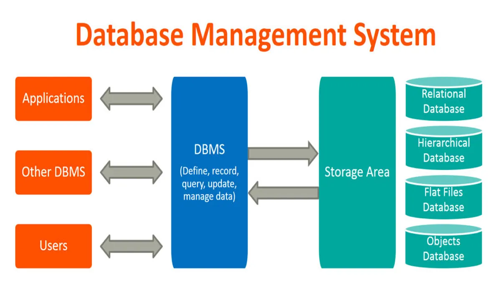

Database Management Systems (DBMS) are software systems used to store, retrieve, and run queries on data. A DBMS serves as an interface between an end-user and a database, allowing users to create, read, update, and delete data in the database.
DBMS manage the data, the database engine, and the database schema, allowing for data to be manipulated or extracted by users and other programs. This helps provide data security, data integrity, concurrency, and uniform data administration procedures.
DBMS optimizes the organization of data by following a database schema design technique called normalization, which splits a large table into smaller tables when any of its attributes have redundancy in values. DBMS offer many benefits over traditional file systems, including flexibility and a more complex backup system.
Database management systems can be classified based on a variety of criteria such as the data model, the database distribution, or user numbers. The most widely used types of DBMS software are relational, distributed, hierarchical, object-oriented, and network.
MySQL is a database management system. A database is a structured collection of data. It may be anything from a simple shopping list to a picture gallery or the vast amounts of information in a corporate network. To add, access, and process data stored in a computer database, you need a database management system such as MySQL Server. Since computers are very good at handling large amounts of data, database management systems play a central role in computing, as standalone utilities, or as parts of other applications.
Open source means it’s possible for anyone to use and modify the software. Anybody can download MySQL software from the internet and use it without paying for it. You can also change its source code to suit your needs. MySQL software uses the GNU General Public License (GPL) to define what you may and may not do with the software in different situations.